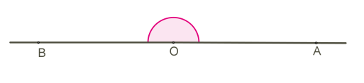
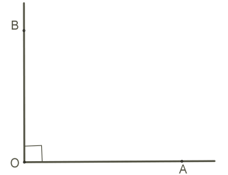
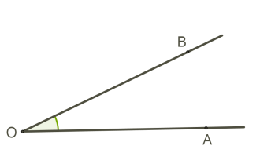
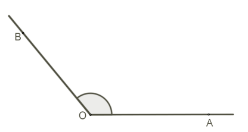
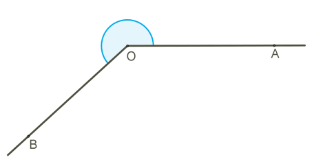

Независимо от измеряемого объекта, измеряемая величина имеет такие же свойства.
Свойства величины угла
1. Равные углы имеют равные величины.
2. Часть угла всегда имеет величину, которая меньше величины угла.
3. Если лучи, выходящие из вершины угла, делят угол на части, то величина угла равна сумме
величин этих частей.
Один из инструментов измерения, которые используются для измерения угла, называется транспортир.
Совсем особенная единица измерения угла - градус.
Это не тот градус, который используют для измерения температуры.
Для измерения угла как единицу измерения принимают 1/180 часть развёрнутого угла, таким образом:
Величина развёрнутого угла 180 таких единиц или градусов
Это записывается:∠AOB = 180.

Следовательно:
Так как полный угол состоит из двух развёрнутых углов, то его величина 360
Можем представить и угол, величина которого 0
Одна четвёртая часть полного угла или половина развёрнутого угла называется прямой угол с
величиной ∠AOB = 90 и особым знаком во внутренней
части угла.

Угол, величина которого 0 < ∠AOB < 90, называют
острый угол.

Угол, величина которого 90 < ∠AOB < 180, называют
тупой угол.

Угол, величина которого 180 < ∠AOB < 360,
называют
открытый угол.
